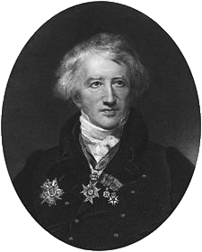

Jean-Baptiste Lamarck
Georges Léopold Chrétien Frédéric Dagobert Cuvier (también llevó el apodo de Chrétien), barón de Cuvier (Montbéliard, Sacro Imperio Romano Germánico, 23 de agosto de 1769-París, Francia, 13 de mayo de 1832), fue un naturalista francés. Fue el primer científico que propuso que la extinción de los dinosaurios se debió a una catástrofe natural.
Fue el primer gran promotor de la anatomía comparada y de la paleontología. Ocupó diferentes puestos de importancia en la educación nacional francesa en la época de Napoleón, y tras la restauración de los Borbones fue nombrado profesor de anatomía comparada del Museo Nacional de Historia Natural de Francia, en París.
Clasificación de los animales
Partiendo de su concepción funcional del organismo, Cuvier investigó la permanencia de las grandes funciones fisiológicas en la diversidad de las especies. Este "principio de correlación" actuaba como hilo conductor tanto de la anatomía comparada como de la paleontología. Así -señalaba Cuvier- la depredación implica un cierto tipo de dentición, un tubo digestivo capaz de asimilar la carne y miembros que permitan una locomoción adaptada a esa dieta.
Cuvier fue el primer naturalista en clasificar el reino animal desde el punto de vista estructural o morfológico que, no obstante, estaba completamente subordinado a la función. Su obra más importante fue el Regne animal distribué d'après son organisation ("Reino animal distribuido a partir de su organización") que apareció en cuatro volúmenes en su primera edición en 1817 y en cinco a partir de la segunda edición (1829-1830).
Cuvier defendió el principio según el cual, teniendo en cuenta los datos proporcionados por la anatomía comparada, los animales debían ser agrupados en cuatro planes estructurales de organización (embranchements): vertebrados, moluscos, articulados y radiados. Cada uno de estos grupos se definía por una disposición particular de los sistemas esenciales, entre los cuales se encontraban, fundamentalmente, los núcleos vitales, a saber, el cerebro y el aparato circulatorio. El resto de los órganos puede variar dentro de cada plan corporal, siempre respetando el principio de correlación.
Cuvier se oponía radicalmente al gradualismo, por lo que estos planes eran considerados irreductibles entre sí. Tanto su funcionalismo como su defensa de esta irreductibilidad le condujeron a una célebre polémica con Étienne Geoffroy Saint-Hilaire.